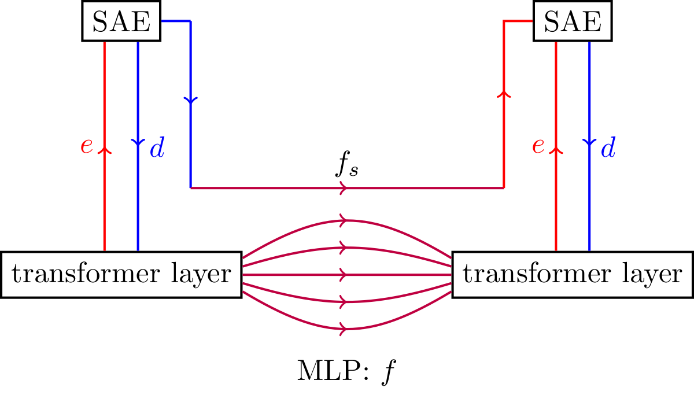
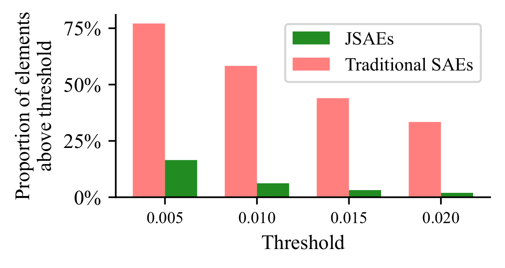
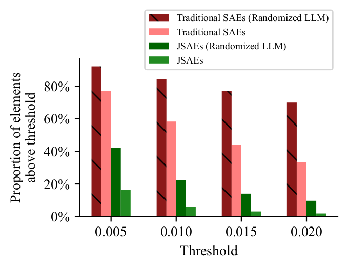

(2025-02-26) New preprint.
Jacobian Sparse Autoencoders: Sparsify computations, not just activations
Lucy Farnik, Tim Lawson, Conor Houghton, Laurence Aitchison
arXiv: 2502.18147
Another paper mostly due to my collaborators Lucy, Tim and Laurence. I am lucky to be involved because it is super work and has huge potential. My collaborators are largely motivated by a general interest in transformers and understanding what makes them work; I am also excited by the potential applications of this work to linguistics.
Recently SAEs, sparse autoencoders, have been used to study representations inside transformers, the idea is to look at the complicated, dense, activation patterns, to fan them out using an autoencoder with a very high-dimensional latent layer and to force the activation patterns in this latent layer to be sparse. Typically this uses TopK sparsity, basically all but the most active k nodels are set to zero before decoding. The degree of sparsity is usually very high, a 1000-node layer in the transformer is fanned out to a 32,000-node latent layer in the auto-encoder but only the top k=32 activations used for reconstruction.
At first this seems very promising, but as described in
Sparse autoencoders can interpret randomly initialized
transformers,
Thomas Heap, Tim Lawson, Lucy Farnik and Laurence
Aitchison
arXiv: 2501.17727
it turns out this does not actually discover a property of a trained transformer, this SAE setup can discover sparse representations in a random, untrained, transformer. The sparseness discovered by the SAE appears to be a property of the input not the computation performed by the transformer.

This led my collaborators to realise that the important property is computational, rather than representational sparseness. To study this two SAEs are used, one for the layer each side of one of the transformer's MLPs. If the MLP map is called f then it can be approximated as a map between the sparse representations in the SAEs, basically by running it through the decoder and encoder maps in the auto-encoders; giving fs, an approximation to f, Importantly since TopK sparseness is used for the SAEs this is a map between two k-dimensional spaces and so it is not computationally unfeasible to calculate the Jacobian. The idea behind the paper is to optimize the choice of the two SAEs both to minimize the reconstruction error, as before, but, in addition to maximize the sparsity of the Jacobian: basically there are three terms in the loss function, two reconstruction loss terms, one for each SAE and a sparsity term.
The headline is that this works, this approach, which we call a JSAE, produces a sparse Jacobian without sacrificing reconstruction accuracy.

Furthermore rhis sparsity is only achievable for the trained transformer, not for a random transformer:

The fractional decrease in sparsity for a trained transformer compared to a random transformer is vastly greater for the JSAE.
Lucy has a blog post which gives background and intuition for the paper here: lesswrong.com.
For my part, the exciting thing is that we seem to have developed a tool that can give us genuine sparse representation related by sparse computations. What are the sparse representations of language, what are the sparse computations?